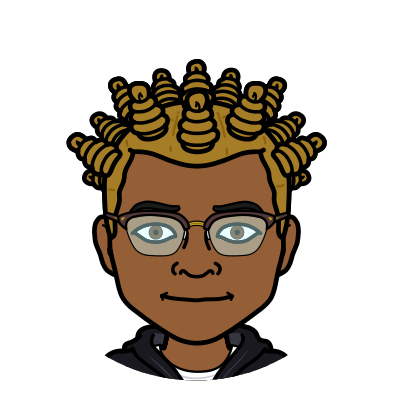

Team Page
Jeseekia
My name is Jeseekia, a Software Engineer and one of the Instructors for Next Gen Apps. I love building with programming languages and seeing my work come to life instantly. I'm also into gaming and aerial acrobtics.
Emma
My name is Emma, and I am one of the instructors for Next Gen Apps. One of my favorite parts of technology work is making digital maps. In my spare time, I enjoy soccer and making music.
Marric
I am a mentor for Next Gen Apps.
Brice
My name is Brice, I am in the 10th grade, my favorite part about technology is how it is used to make video games which i find pretty interesting. My favorite interests are listening to Kpop and doing Kpop related things such as fanart, I also love to play video games and watch Anime and Cartoons.
Jaquice
my name is jaquice‚úåüòéüòè^o^.i am in 6th grade. my favorite thing is games because they are very fun
Kyeria
My name is ky'eria, i am in the 7th grade. My favorite part about technology is that you can learn more about it. How it works, what chip to use, even more. That my favorite part about technology.
Brooklin
My name is Brooklin, I am in the 8th grade. My favorite thing about technology is how beneficial it is. In my spare time, I enjoy reading, listening to music, and watching Netflix.
Ayden
My name is Ayden. I am in the 8th grade, and i enjoy playing video games and listening to music in my spare time.
Breia
My name is Breia, and I am in the eleventh grade. My favorite parts of technology are HTML and CSS. In my spare time, I enjoy listening to music and designing websites.
Jaelin
My name is jaelin lott I am in 7th grade the thing I like to on the computer is to watch youtube and make games.